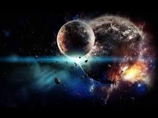

STAR
Our planetary system is located in an outer spiral arm of the Milky Way galaxy.
The Latest
NASA Planetary Science Highlights: 2021
Our solar system consists of our star, the Sun, and everything bound to it by gravity – the planets Mercury, Venus, Earth, Mars, Jupiter, Saturn, Uranus, and Neptune; dwarf planets such as Pluto; dozens of moons; and millions of asteroids, comets, and meteoroids. Beyond our own solar system, we have discovered thousands of planetary systems orbiting other stars in the Milky Way.Look into the sky on a clear night, out of the glare of streetlights, and you will see a few thousand individual stars with your naked eyes. With even a modest amateur telescope, millions more will come into view.
So how many stars are there in the Universe?
It is easy to ask this question, but difficult for scientists to give a fair answer!
Stars are not scattered randomly through space, they are gathered together into vast groups known as galaxies. The Sun belongs to a galaxy called the Milky Way. Astronomers estimate there are about 100 thousand million stars in the Milky Way alone. Outside that, there are millions upon millions of other galaxies also!
Hipparcos mapped millions of stars in our galaxy, but how many more are there?
Hipparcos mapped millions of stars in our galaxy, but how many more are there?
It has been said that counting the stars in the Universe is like trying to count the number of sand grains on a beach on Earth. We might do that by measuring the surface area of the beach, and determining the average depth of the sand layer.
If we count the number of grains in a small representative volume of sand, by multiplication we can estimate the number of grains on the whole beach.
For the Universe, the galaxies are our small representative volumes, and there are something like 1011 to 1012 stars in our Galaxy, and there are perhaps something like 1011 or 1012 galaxies.
With this simple calculation you get something like 1022 to 1024 stars in the Universe. This is only a rough number, as obviously not all galaxies are the same, just like on a beach the depth of sand will not be the same in different places.
No one would try to count stars individually, instead we measure integrated quantities like the number and luminosity of galaxies. ESA's infrared space observatory Herschel has made an important contribution by 'counting' galaxies in the infrared, and measuring their luminosity in this range – something never before attempted.
Knowing how fast stars form can bring more certainty to calculations. Herschel has also charted the formation rate of stars throughout cosmic history. If you can estimate the rate at which stars have formed, you will be able to estimate how many stars there are in the Universe today.

Gaia mapping the stars of the Milky Way
In 1995, an image from the Hubble Space Telescope (HST) suggested that star formation had reached a peak at roughly seven thousand million years ago. Recently, however, astronomers have thought again.
The Hubble Deep Field image was taken at optical wavelengths and there is now some evidence that a lot of early star formation was hidden by thick dust clouds. Dust clouds block the stars from view and convert their light into infrared radiation, making them invisible to the HST. But Herschel could peer into this previously hidden Universe at infrared wavelengths, revealing many more stars then ever seen before.
Soon Gaia will launch, which will study one thousand million stars in our Milky Way. It will build on the legacy of the Hipparchus mission, which pinpointed the positions of more than one hundred thousand stars to high precision, and more than one million stars to lesser precision.
Gaia will monitor each of its one billion target stars 70 times during a five-year period, precisely charting their positions, distances, movements, and changes in brightness. Combined, these measurements will build an unprecedented picture of the structure and evolution of our Galaxy.
Thanks to missions like these, we are one step closer to providing a more reliable estimate to that question asked so often: "How many stars are there in the Universe?"